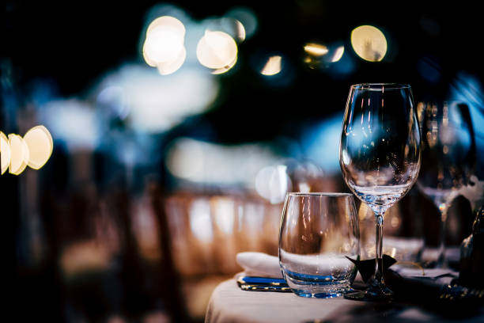
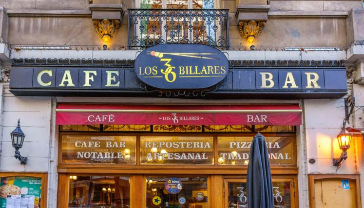
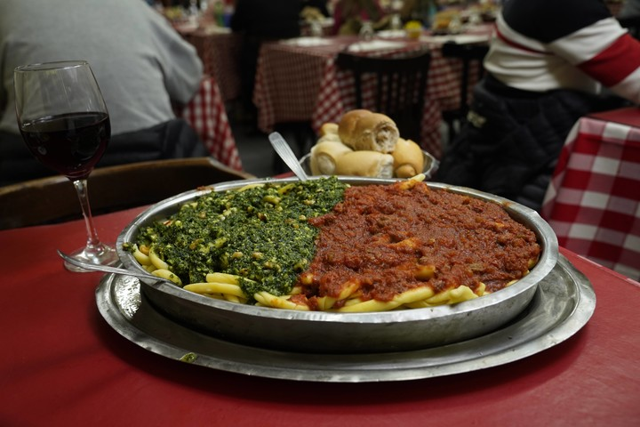
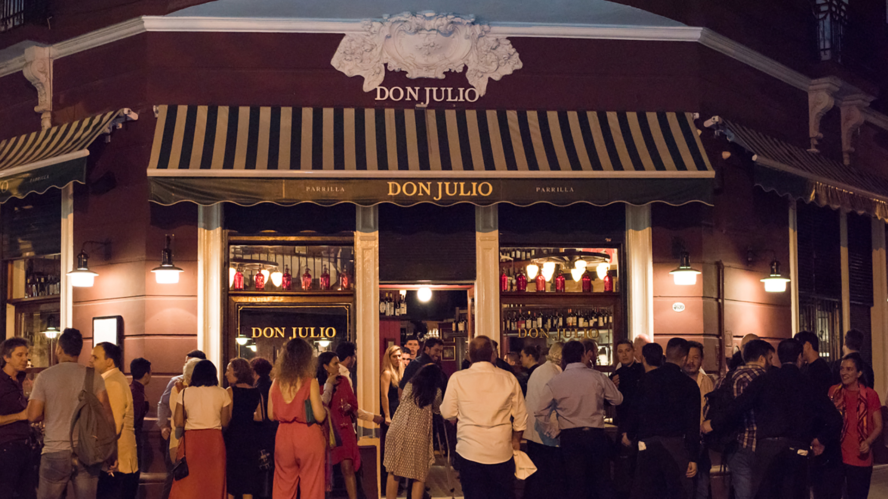

las cuartetas
Restaurante sencillo con terraza que ofrece pizzas sustanciosas y opción de comida para llevar.

Terminá tu día con una cena inolvidable. Sorprendé a alguien especial con una experiencia gastronómica única. Platos exquisitos, ambientes encantadores y momentos que valen oro.
Restaurante sencillo con terraza que ofrece pizzas sustanciosas y opción de comida para llevar.
"Formamos parte de una empresa gastronómica que se destaca como restaurante de cocina italiana y elaborador de alimentos artesanales desde 1995. Priorizando la calidad en cada uno de sus productos, en Italpast nos esforzamos todos los días para que nuestros clientes nos sigan eligiendo."

"Inaugurado en 1894, “Los 36 Billares” es uno de los bares más tradicionales de Buenos Aires y uno de los centros más importantes de billar de todo el país. Los 36 Billares posee sin dudas la sala de billar más tradicional de Buenos Aires, y según los entendidos es la mejor de la ciudad. Acompañado con la mejor oferta gastrónomica, ya sea un excelente café, deliciosa pastelería artesanal de elaboración propia, las mejores pizzas y empanadas o cualquiera de los variados platos de comida que ofrece en su menú. “Los 36 Billares”, habita el corazón de miles de porteños que aquí, a lo largo de tantos años, compartieron y comparten sus sueños. Cafetería - Pasteleria Artesanal - Pizzería - Restaurant - Eventos"
Spiagge di Napoli es un bodegón italiano en el barrio de Boedo, Buenos Aires, especializado en pastas caseras por kilo. Es un lugar emblemático de la zona con un ambiente familiar y descontracturado
Don Julio es un reconocido restaurante argentino ubicado en el barrio de Palermo, Buenos Aires, emblema de la gastronomía argentina y famoso mundialmente por su excelencia en carnes rojas argentinas de alta calidad, cocinadas a la perfección en parrilla a leña.
